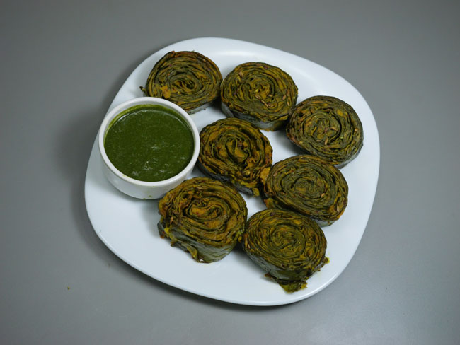
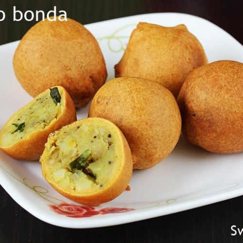
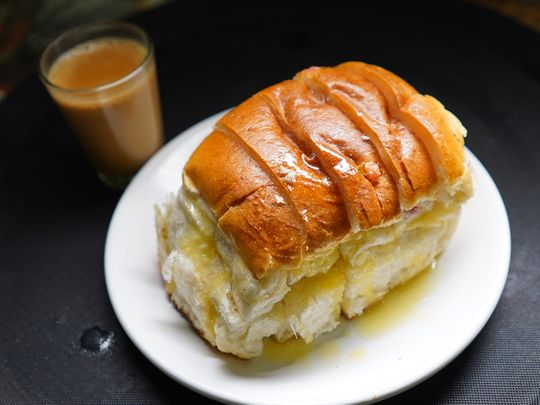
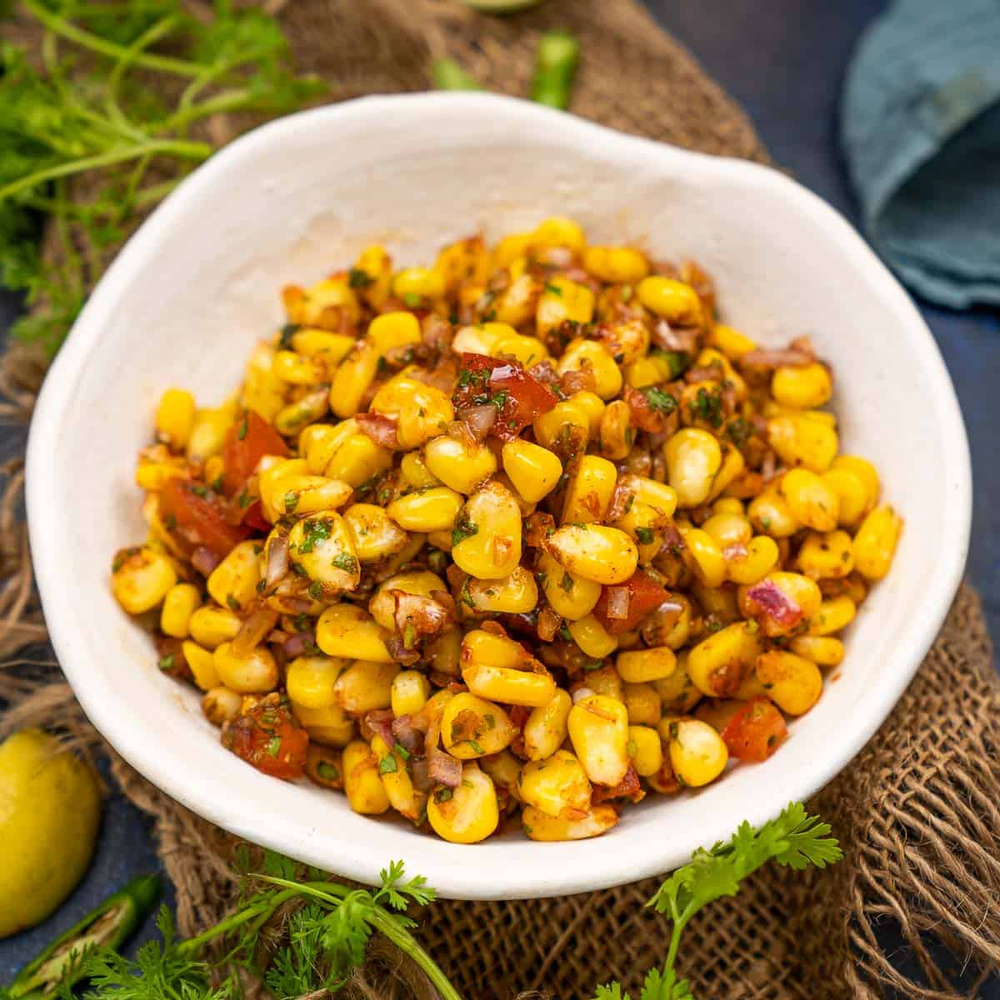
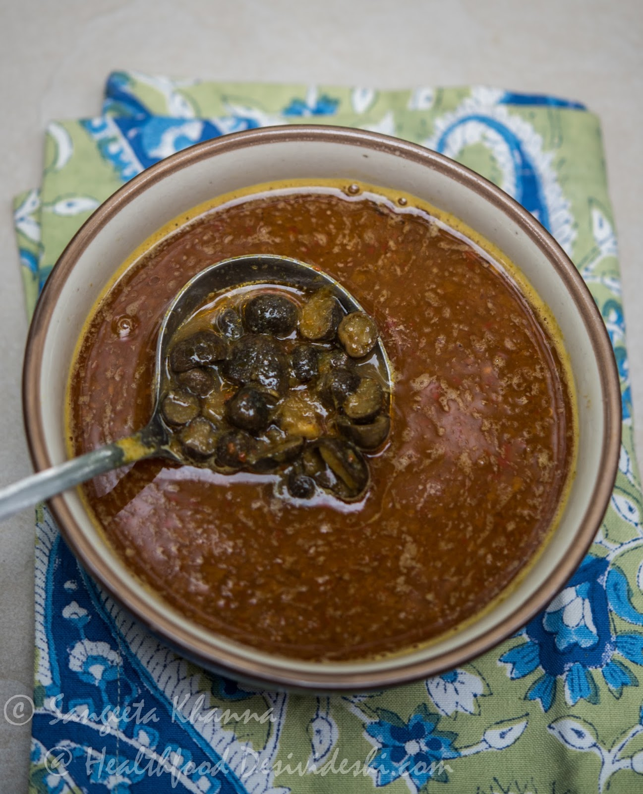
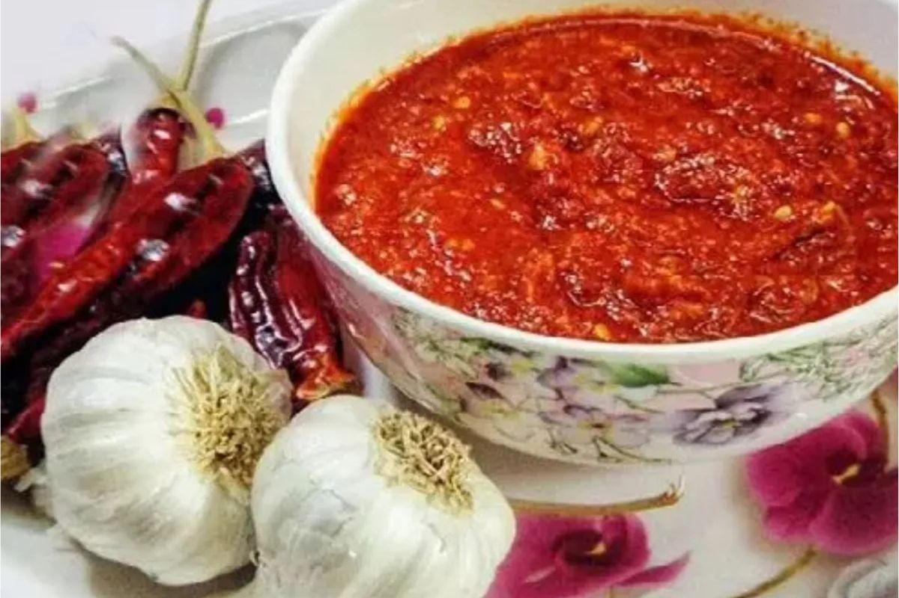
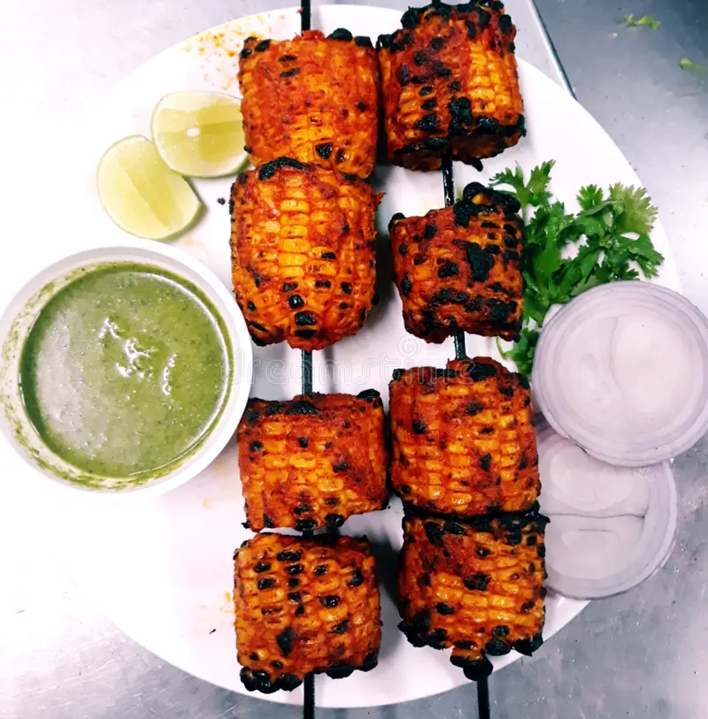
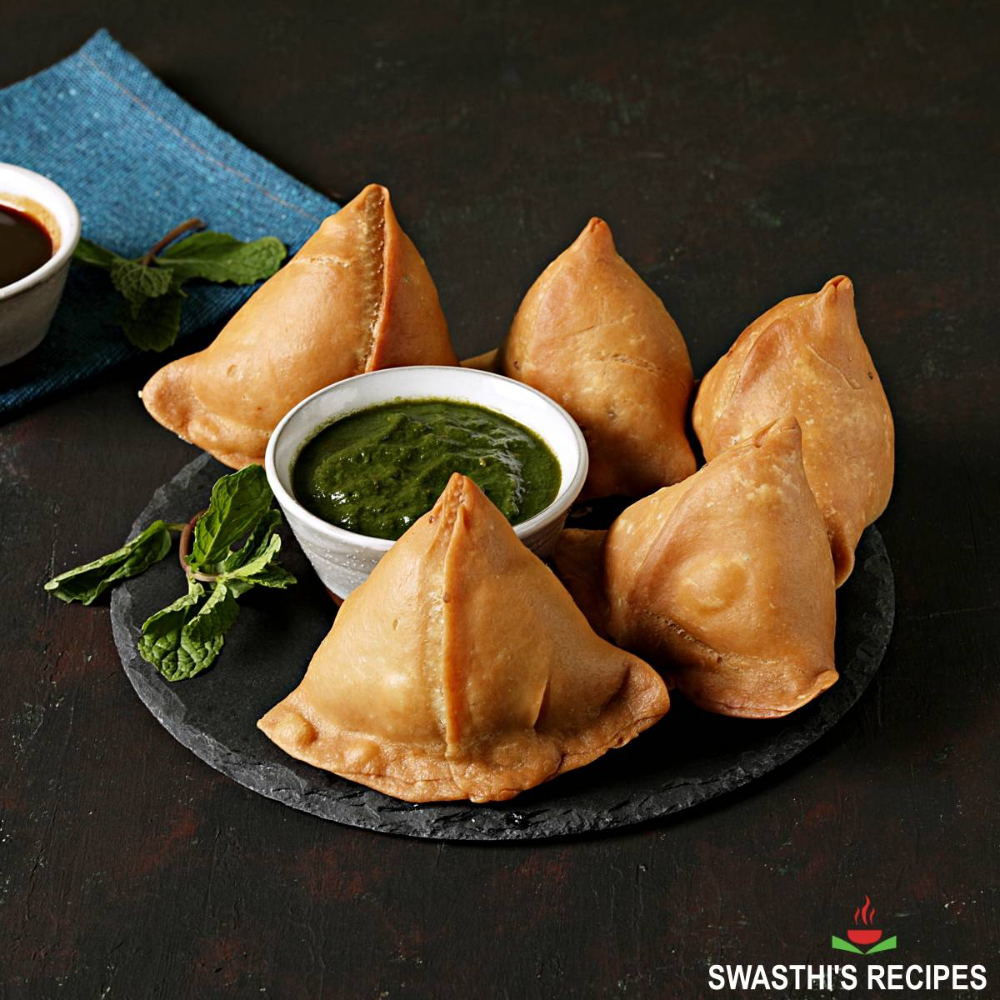
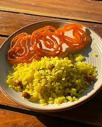
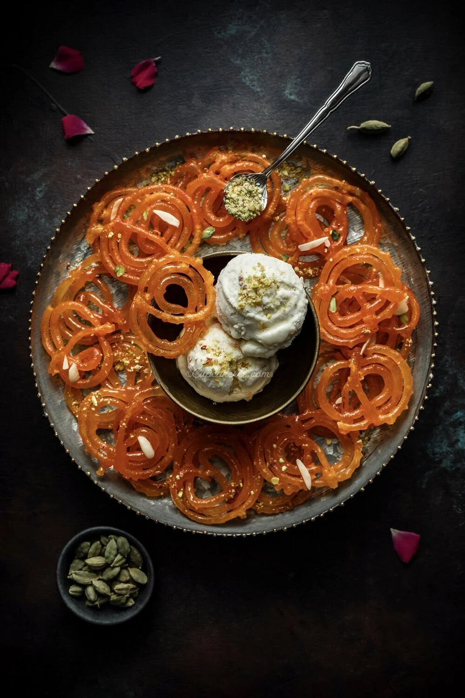

Rainy Days Call For Delicious Food
Cook These Dishes In Monsoon.....
Enjoy With Friends Family And With Your Loved Once
Our Top Picks For You

Arbi Patte Ke Pakode

Aloo Bonde

Bun Maska And Chai

CronChaat
Dum Aloo Chaat

Katarua Ki Sabji
Dharti Ke Phool Ki Sabji

Lahsan Ki Chutney

Tandoori Bhutta
Pakodas
Paneer Pakodas
Red Masoor Dal Pakodas

Samosa

Poha With Jalebi
